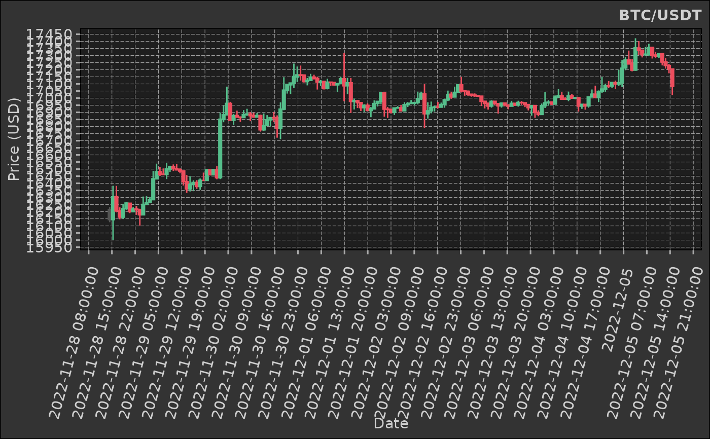

Candlesticks financial `ggplot2` layer
Usage
stat_candlestick(
mapping = NULL,
data = NULL,
geom = "linerange",
position = "identity",
na.rm = FALSE,
show.legend = NA,
inherit.aes = TRUE,
colours = list(up = "#55BE8B", down = "#ED4D5D", no_change = "#535453"),
...
)Arguments
- mapping
A `ggplot2::aes` object (required - default `NULL`).
`x`: The x-axis value, usually representing time.
`open`: The opening price.
`close`: The closing price.
`high`: The highest price in the time range.
`low`: The lowest price in the time range.
`group`: (optional) The grouping variable.
- data
A `data.table` object (required - default `NULL`).
- colours
A `list` with three elements "up", "down", and "no_change". These are the colours of the candlesticks when a positive change in price action, a negative change and no change respectively.
- ...
Additional arguments passed to `ggplot2::layer`.
Details
This is a `ggplot2` extension; it is used with the `+` operator for adding a layer to a `ggplot2` object.
Examples
# get some financial data
# kucoin is a private package - you can use any data source
ticker <- "BTC/USDT"
dt <- kucoin::get_market_data(
symbols = ticker,
from = "2022-11-28 15:29:43 EST", # lubridate::now() - lubridate::days(7),
to = "2022-12-05 15:29:31 EST",# lubridate::now(),
frequency = "1 hour"
)
dt
#> symbol datetime open high low close volume
#> <char> <POSc> <num> <num> <num> <num> <num>
#> 1: BTC/USDT 2022-11-28 15:00:00 16215.3 16233.6 16126.0 16144.1 327.8979
#> 2: BTC/USDT 2022-11-28 16:00:00 16144.1 16382.6 16000.0 16305.9 837.5801
#> 3: BTC/USDT 2022-11-28 17:00:00 16305.9 16382.0 16195.4 16205.4 507.8351
#> 4: BTC/USDT 2022-11-28 18:00:00 16206.1 16230.7 16146.5 16162.6 252.3387
#> 5: BTC/USDT 2022-11-28 19:00:00 16161.7 16253.3 16150.1 16220.9 225.4121
#> ---
#> 165: BTC/USDT 2022-12-05 11:00:00 17295.2 17314.3 17283.8 17312.0 176.8633
#> 166: BTC/USDT 2022-12-05 12:00:00 17312.0 17318.6 17230.5 17254.5 199.6922
#> 167: BTC/USDT 2022-12-05 13:00:00 17254.5 17282.5 17208.1 17229.7 105.2655
#> 168: BTC/USDT 2022-12-05 14:00:00 17229.8 17241.4 17175.1 17205.2 140.4375
#> 169: BTC/USDT 2022-12-05 15:00:00 17205.1 17205.1 17021.6 17083.0 504.9158
#> turnover
#> <num>
#> 1: 5301836
#> 2: 13557348
#> 3: 8270203
#> 4: 4082464
#> 5: 3653147
#> ---
#> 165: 3058929
#> 166: 3447960
#> 167: 1815447
#> 168: 2416907
#> 169: 8630174
dt |>
ggplot2::ggplot(ggplot2::aes(
x = datetime,
open = open,
close = close,
high = high,
low = low,
group = symbol
)) +
## ------------------------------------
dmplot::stat_candlestick() +
## ------------------------------------
ggplot2::scale_x_continuous(n.breaks = 25, labels = \(x) {
lubridate::floor_date(lubridate::as_datetime(x), "hours")
}) +
ggplot2::scale_y_continuous(n.breaks = 25) +
ggplot2::labs(
title = ticker,
x = "Date",
y = "Price (USD)"
) +
dmplot::theme_dereck_dark() +
ggplot2::theme(
axis.text.x = ggplot2::element_text(angle = 75, vjust = 0.925, hjust = 0.975),
panel.grid.minor = ggplot2::element_blank()
)
